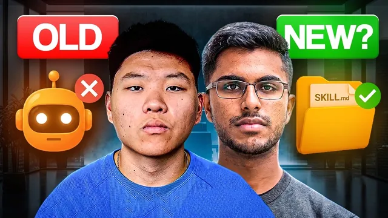

앤트로픽 엔지니어의 조언: 에이전트 대신 뭘 만들어야 하나

원본 영상 보기 →
- "에이전트"가 아니라 "범용 에이전트 + 스킬" 구조로 이동해요
- 검증된 코드와 스크립트는 반드시 재사용 가능한 형태로 저장하세요
- AI의 첫 결과물을 사람이 검증하는 구조는 확장되지 않아요
한 줄 요약
앤트로픽 엔지니어들은 작업마다 새 에이전트를 만드는 대신, 하나의 범용 에이전트에 "스킬(Skill)"을 장착해 쓰는 방식으로 전환했어요. 그 배경과, 스킬을 실제로 잘 작동시키는 4가지 원칙을 정리합니다.
전체 내용 정리
왜 개별 에이전트 대신 스킬일까요
앤트로픽은 에이전트가 끝났다고 말한 게 아니에요. 작업마다 별도의 에이전트를 새로 만드는 방식을 그만뒀다고 밝힌 겁니다.
스킬을 만든 두 엔지니어 배리 장과 마헤시 무라그는, 밑바탕의 에이전트가 예상보다 훨씬 범용적으로 발전했기 때문에 더 이상 작업별로 에이전트를 따로 구축할 필요가 없어졌다고 설명해요.
이 구조를 이해하는 가장 쉬운 방법은 스마트폰입니다. 프로세서와 운영체제는 소수의 회사가 만들고 사용자는 거의 건드리지 않지만, 앱을 골라 쓰는 것만으로 같은 하드웨어에 다양한 기능을 더할 수 있죠.
AI 스택도 똑같은 구조로 수렴하고 있어요. 모델은 프로세서, 에이전트 런타임은 운영체제, 스킬은 앱에 해당합니다.
클로드 코드는 이미 파일을 읽고 코드를 쓰고 도구를 호출하는 범용 기능을 갖추고 있어요. 그러니 프레젠테이션을 만들거나 회사를 조사하거나 링크드인 글을 쓸 때마다 이 기반을 처음부터 새로 만들 필요 없이, 그 작업에 필요한 과정·맥락·스크립트·예시를 담은 스킬만 얹어 주면 됩니다.
원칙 1: 검증된 코드는 스킬 안에 저장하세요
첫 번째 원칙은 단순해요. 클로드가 같은 기술적 문제를 매번 처음부터 다시 풀게 하지 마세요.
앤트로픽 팀은 클로드가 슬라이드에 스타일을 입힐 때마다 사실상 동일한 파이썬 스크립트를 매번 새로 작성하는 걸 지켜봤습니다. 토큰을 낭비할 뿐 아니라, 매번 처음부터 다시 만들다 보니 결과가 실행할 때마다 조금씩 달라지는 문제까지 생겼어요.
그래서 한 번 검증된 스크립트를 스킬 안에 저장해 "미래의 자신을 위한 도구"로 남겨 두는 방식을 택했습니다. 다음번엔 이미 검증된 버전을 그대로 실행하면 돼요. 개발자들이 오래전부터 써 온 DRY(Don't Repeat Yourself) 원칙과 정확히 같습니다.
이 영상을 만든 크리에이터도 자신의 AI 운영체제 안에서 같은 렌더러·템플릿·스크립트를 계속 재사용해요. 예를 들어 카드뉴스 워크플로우는 슬라이드 렌더링 방식을 매번 새로 고민하지 않고 이미 작동하는 파일을 그대로 가리키게 만들어, 클로드가 새 콘텐츠 작성에만 집중하도록 합니다.
적용 방법은 이래요. 클로드가 마음에 드는 결과를 내는 스크립트를 짰다면 "방금 쓴 스크립트를 스킬의 스크립트 폴더에 저장하고 skill.md를 업데이트해서 다음부터는 이 파일을 실행하도록 해 줘"라고 지시한 뒤, 같은 유형의 작업을 두 번 돌려 결과가 실제로 저장된 파일을 호출하는지 직접 비교 검증하세요.
원칙 2: 스킬 설명을 정밀하게 쓰세요
두 번째 원칙은 스킬이 많아질수록 더 중요해집니다. 클로드가 지금 필요한 스킬을 정확히 찾아낼 수 있어야 해요.
정비공이 타이어를 갈 때 공구함의 모든 도구를 꺼내 놓지 않고 필요한 몇 개만 집어들죠. 클로드도 시작할 때 모든 스킬의 전체 지침·예시·스크립트를 다 읽지 않습니다.
대신 각 스킬의 이름과 설명(YAML 프런트매터)만 먼저 훑어보고, 사용자의 프롬프트가 특정 설명과 일치할 때만 그 스킬의 전체 skill.md를 불러와요. 앤트로픽은 이를 "점진적 공개(progressive disclosure)"라 부르는데, 덕분에 불필요한 지침이 작업 맥락에 쌓여 생기는 "컨텍스트 부식(context rot)"을 피할 수 있습니다.
하지만 이건 스킬 설명이 얼마나 명확한지에 전적으로 달려 있어요. "콘텐츠 작성 도와줌"과 "마케팅 자산 생성"처럼 설명이 겹치면 클로드는 사실상 추측을 하게 됩니다.
그래서 각 스킬은 하나의 명확한 작업만 맡고, 설명에는 실제 사람이 쓸 법한 표현을 담아야 해요. "카드뉴스, 캐러셀 슬라이드, 링크드인 게시물을 요청할 때 사용" 같은 식으로요.
점검 방법도 있습니다. 클로드 코드에게 "내 모든 스킬 설명을 검토해서 각각 무슨 일을 하는지, 언제 실행돼야 하는지, 다른 스킬과 어디서 겹치는지 알려 주고 모호한 설명만 다시 써 줘"라고 시키세요. 그다음 세 가지로 테스트합니다. 직접 트리거되어야 할 요청, 다르게 표현했지만 트리거돼야 할 요청, 절대 트리거되면 안 되는 무관한 요청이요.
원칙 3: 실수를 그때그때 고치지 말고 스킬을 업데이트하세요
세 번째 원칙은 교정한 내용을 그 순간에만 쓰고 버리지 말라는 겁니다.
클로드에게 "고쳐 줘"라고만 말하고 넘어가면 그 순간의 출력은 고쳐지지만 근본적인 프로세스는 여전히 고장 난 채로 남아요.
이 영상 제작자는 클로드가 존재하는 파일을 못 찾는다고 하면 그냥 경로를 알려 주고 넘어가지 않습니다. 클로드에게 어디를 검색했는지, 왜 놓쳤는지 되짚게 한 뒤 라우팅이나 스킬 자체를 업데이트해서 다음 실행이 처음부터 올바른 곳에서 시작하도록 만든다고 설명해요.
앤트로픽은 스킬을 이런 지속적 학습의 발판으로 설계했습니다. 클로드가 한 번 기록해 둔 것은 미래의 자신이 효율적으로 활용할 수 있어야 한다는 게 원칙이에요.
다만 스킬은 모든 대화를 통째로 기억하는 게 아니라 특정 작업에 필요한 절차적 지식만 저장합니다. 그러니 이렇게 나눠서 대응하세요.
- 프로세스 자체가 잘못됐다면 → skill.md의 지침을 고치기
- 톤·브랜드·예시를 놓친다면 → 레퍼런스 파일 추가하기
- 같은 실수가 반복된다면 → 그 실수를 명확히 막는 규칙 추가하기
그리고 같은 작업을 다시 돌려 검증해야 해요.
또 스킬은 특정 모델에 종속되지 않는 오픈 포맷이므로, 같은 스킬 폴더를 다른 호환 에이전트 환경에서도 테스트해 보세요. 결과가 무너지면 숨겨진 전제나 빠진 예시, 특정 모델만 이해하는 지시문을 찾아 다듬으면 됩니다.
원칙 4: 결과를 내놓기 전에 반드시 검증 루프를 거치게 하세요
네 번째 원칙이 영상에서 가장 강조하는 부분입니다. 스킬은 첫 시도를 결과물로 내놓고 끝내면 안 돼요.
대부분의 AI 워크플로우가 가진 가장 큰 공백은 이겁니다. AI가 작업의 70~80%만 해놓고 "다 됐다"고 말하면 사람이 나머지 20~30%를 일일이 수작업으로 메꿔야 한다는 점이요.
하지만 사람이 결과물을 어떻게 검증하는지 스스로 알고 있다면, 그 체크리스트를 스킬 안에 그대로 심어 AI가 더 많은 격차를 스스로 메우게 할 수 있습니다.
작업 유형별로 이렇게요.
- 슬라이드 덱 — 각 슬라이드를 이미지로 렌더링해 스크린샷을 직접 확인하고, 잘리거나 읽기 어려운 부분을 고쳐 다시 렌더링
- 리서치 리포트 — 원문 출처를 열어 주장과 근거를 대조하고, 검증되지 않은 내용은 제거
- 광고 카피처럼 주관적인 콘텐츠 — 초보자·회의적인 구매자·실제 타깃 독자 같은 여러 페르소나 서브에이전트가 각자의 관점에서 검토하고, 반복적으로 지적되는 문제만 강하게 반영
여기서 검증이란 클로드가 자기 결과물을 보고 "괜찮아 보인다"고 말하는 게 아니에요. 스크린샷·테스트 결과·출처·참고 예시·다른 관점의 피드백처럼 첫 초안 바깥의 증거가 있어야 한다는 뜻입니다.
거의 모든 스킬에 이 지시를 넣을 수 있어요.
"최종 결과를 내놓기 전에 수용 기준을 정의하고, 초안을 만들고, 관련 검증 방법으로 점검하고, 발견한 모든 문제를 고친 뒤 한 번 더 점검해서 기준을 통과했을 때만 결과를 반환하라."
핵심 인사이트
- "에이전트"가 아니라 "범용 에이전트 + 스킬" 구조로 이동해요: 작업마다 새 에이전트를 만드는 대신 하나의 범용 에이전트에 스킬(프로세스·스크립트·예시)을 장착하는 게 앤트로픽이 실제로 검증한 방향입니다. 자동화를 설계할 때 매번 새 봇을 만들 필요가 없다는 뜻이에요.
- 검증된 코드와 스크립트는 반드시 재사용 가능한 형태로 저장하세요: 같은 결과물을 만들 때마다 AI가 처음부터 다시 만들게 두면 토큰도 낭비되고 결과 일관성도 떨어집니다. 한 번 검증된 산출물은 "자산"으로 고정해야 해요.
- AI의 첫 결과물을 사람이 검증하는 구조는 확장되지 않아요: 검증 체크리스트(스크린샷 확인, 출처 대조, 페르소나 리뷰)를 프로세스 안에 미리 심어 두는 것이 AI 결과물의 신뢰도를 실질적으로 높이는 유일한 방법입니다.
오늘 당장 해볼 것
- 지금 반복해서 쓰고 있는 AI 자동화 작업 하나를 골라, "방금 만든 결과물을 만들어낸 스크립트나 프롬프트를 별도 파일로 저장하고, 다음번엔 이 파일을 그대로 재사용하도록 지시문을 업데이트해 줘"라고 요청해 보세요.
- 쓰고 있는 AI 프롬프트나 스킬 설명이 여러 개라면, "각 설명이 언제 트리거돼야 하는지, 서로 겹치는 부분이 있는지 점검해 줘"라고 감사를 맡겨 보세요.
- 다음번에 AI 결과물이 마음에 안 들어 "고쳐 줘"라고만 말하기 전에, 무엇이 잘못됐는지 원인부터 진단하게 하세요. 프로세스 문제인지, 맥락 부족인지, 규칙 부재인지, 코드 오류인지요. 그 답을 프롬프트나 지침 문서에 영구히 반영하면 같은 실수가 줄어듭니다.